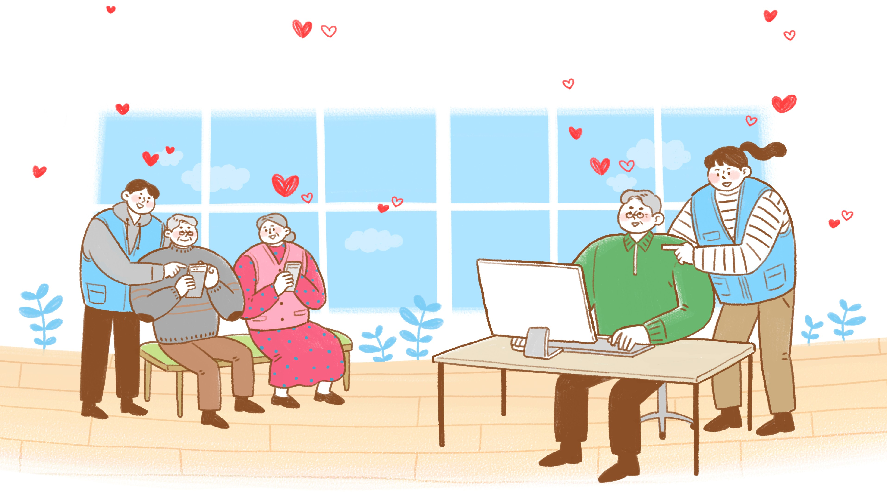

효사랑 재가노인복지센터
어르신을 찾아가는 방문요양서비스 입니다

노인장기요양보험
노인장기요양보험이란?
방문요양
장기요양인정신청 이용가이드
노인장기요양보험제도는 보건복지부에서 고시하여,
건강보험공단에서 국민의 세금으로 운영하는
사회보장제도 입니다.
가정과 같은 편안함과 전문적인 소양으로
부모님처럼 모십니다.
TEL.
(042) 364 - 2457
H.P.
010 - 2048 - 2457
FAX.
(042) 365 - 2457
대전광역시 서구 계백로 1158번길 130, 2층(가수원동)
E-MAIL
mongdorl2000@nate.com